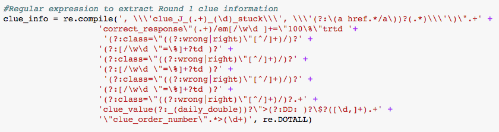

Jeopardy holds a special place in my heart. My family has been watching Jeopardy since I was a kid. We would make up rules like "Don't answer the question until Alex Trebek is done asking it." and "When it's a daily double, you have to shout 'DAILY DOUBLE' as loud as you can". Since getting into data science, I've been curious about what kind of insights I could make about the show. Do contestants from certain parts of the country tend to do better? Do daily doubles improve your chances of winning the game? What kind of categories get the most wrong and right answers? Is Jeopardy getting harder or easier or staying about the same? With this project, I sought to resolve those curiosities.
I began by checking to see if somebody already had gathered the data. There's a dataset that a Reddit user shared that looked promising, but it had no information about the contestants, like their occupation/hometowns and how well they did on each question. To get this information and to be able to keep up with the latest episodes, I decided that I would extract the data on my own. Thankfully, the website j-archive.com has a well kept history of every Jeopardy episode since the 1970s. Each episode of Jeopardy has its own page with questions, answers, and contestant information, including who answered each question right and wrong. Here's an example.
I had some familiarity with the Python library BeautifulSoup, so I began the data extraction process by using it to extract the HTML of each Jeopardy season's directory page. This allowed me to compile an exhaustive list of episode URLs. Since there are more than 5,000 episodes, I didn't want to extract all of their HTML at once. Rather, I wanted to extract one episode's HTML at a time and download it into a CSV file. From there, I'd have the flexibility to load it into Pandas or use another programming language like R or SQL. A function was required that would take in an episode's HTML and output the relevant bits of information. BeautifulSoup has a lot of excellent functions to aid in this task, but I wasn't too familiar with them. At the time I started this project, I was going through a regular expression phase of my life and had confidence that using them extensively could accomplish all of the retrieval I needed. I ended up with a somewhat working function, but it looked messy and complicated. It would gather about 95% of the questions without problem as long as they fit exactly into the pattern prescribed.
 An example of my unregulated regular expression excitement
I ended up doing a complete overhaul of the function, choosing instead to read up on how BeautifulSoup could accomplish the task. BeautifulSoup utilizes the DOM (Document Object Model) in a way that made searching for information much easier. I could search for the tags and partition the HTML in a way that felt more intuitive. The revised function ended up having less lines of code, was more readable (still have some work to do on that aspect), and was about 2.4 times faster than the original function that used regular expressions.
Once the episode extraction function was complete, I made a secondary function that used a generator to yield one URL to my extracting function at a time and then output the questions into a text file. To deal with errors, I originally had the function print out every URL that didn't read correctly. Since it took about 5 hours to collect every question though (I had to leave 5 seconds between each collection or else the site server would deny me access), I would often run it overnight. If I left the error collection as it was, there were 2 problems I realized I would have:
If I needed to exit the program or close the tab, it wouldn't save the printed output. I would have no way of knowing which URLs didn't work.
If I ended up just leaving the computer open and running, I would have a printed list of the URLS, but it would be hard to manipulate them or troubleshoot the error.
I ended up solving this by appending each error URL to a list variable so that I could diagnose the problems easier. This error list was then pickled to ensure that I could reference it once the program was fully ran. Once the errors were fixed, all I had to do was run the generator function on the error list instead of the complete episode list. This worked by making the list smaller and smaller until I had collected all episodes.
The data extraction program can be found on my Github page.